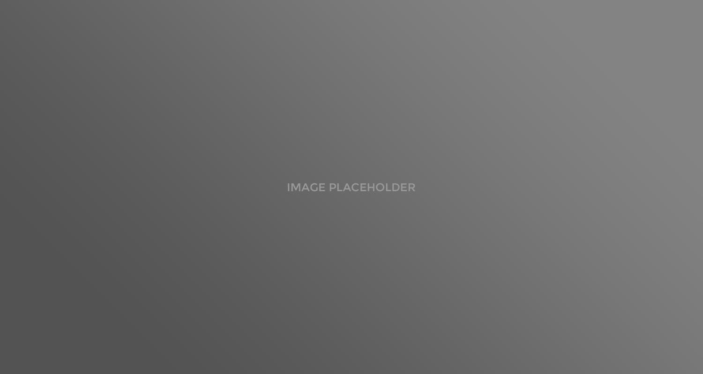
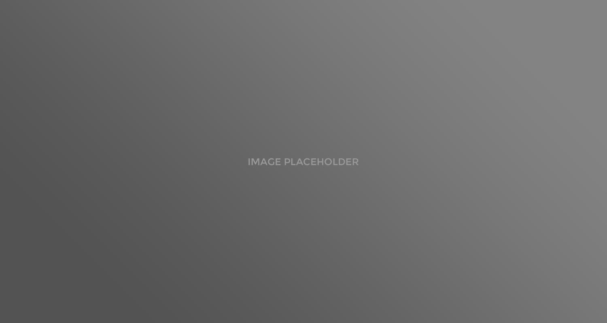

Услуги
КОМПЛЕКСНЫЕ РЕШЕНИЯ, ЧТОБЫ СДЕЛАТЬ ВАШ ПРОЕКТ ИЗВЕСТНЫМ И ПРИБЫЛЬНЫМ
Традиционные и альтернативные маркетинговые решения для тех, кто ценит эффективность и ищет оригинальные идеи
ПОИСКОВЫЙ МАРКЕТИНГ, ЧТОБЫ ВАШ САЙТ СТАЛ БЕЗОТКАЗНОЙ «МАШИНОЙ ПРОДАЖ»
Передовые технологии поискового продвижения для тех, кому нужно повысить число клиентов, их качество и активность
ИНТЕРНЕТ-РЕКЛАМА, ЧТОБЫ АВТОМАТИЗИРОВАТЬ ПРОДАЖИ И ПОВЫСИТЬ ПРИБЫЛЬ
Управляемая активность целевой аудитории для тех, кто хочет формировать спрос раньше конкурентов. В том числе с оплатой только за результат — СРА, CPS, CPL
МОБИЛЬНЫЕ И ВЕБ-РАЗРАБОТКИ, «ТОНКАЯ НАСТРОЙКА» ПРОЦЕССА ПРОДАЖ ПОД ВАШИ ЦЕЛИ
Технологичные решения для любых коммуникационных и бизнес-задач в Сети
МАРКЕТИНГ В СОЦИАЛЬНЫХ СЕТЯХ, ЧТОБЫ ВАМ ВСЕГДА ДОВЕРЯЛИ
Креативные решения для тех, кто стремится повысить узнаваемость и влияние бренда в точках неформального общения
PR В СМИ И БЛОГОСФЕРЕ, ЧТОБЫ ВАША ИНФОРМАЦИЯ СРАЗУ ПРИХОДИЛА К ЦЕЛЕВОЙ АУДИТОРИИ
Контент-решения для тех, кто целенаправленно формирует у аудитории нужный формат заинтересованности
Повышение
знания
знания
Вовлечение
и лояльность
и лояльность

Подготовка
проектов
проектов
Повышение
продаж
продаж
Повышение
эффективности
эффективности


 
